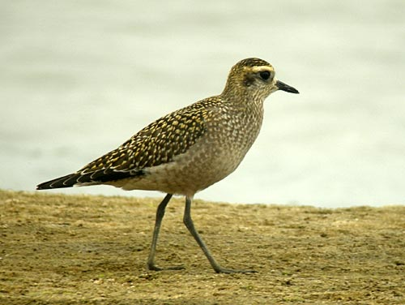

| These photographs accompany records that have been recently submitted to the committee. Publication
here is for informational and educational purposes only and does not constitute endorsement or acceptance of any
particular record.  American Golden-Plover Pluvialis dominica 11 September 2008, Santa Maria River mouth, SBA/SLO 2008-210 © 2008 Curtis A. Marantz Back to CBRC Rare Bird Photos |